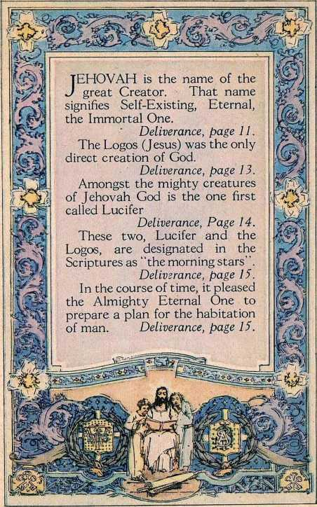
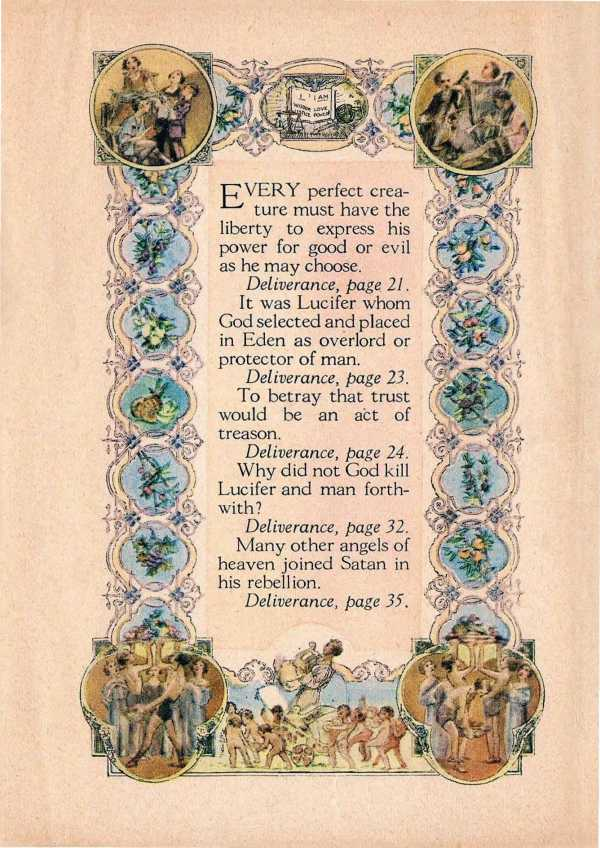
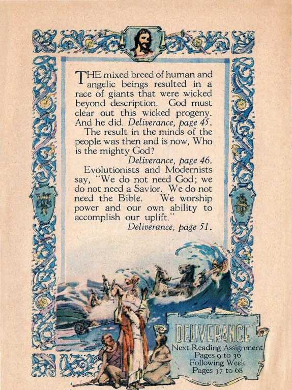
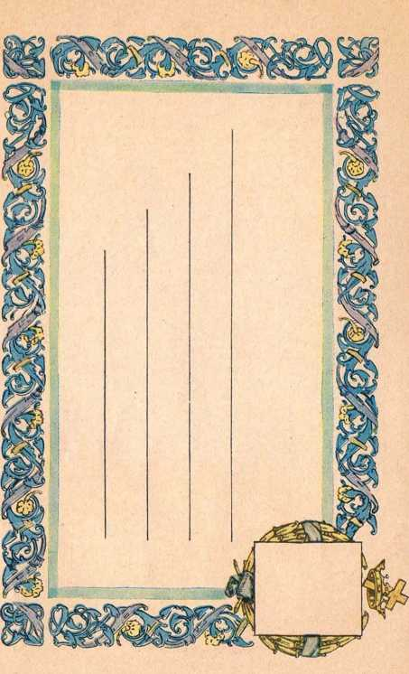

VX 7HY is there so much dis-vv tress in the world? Why are people afflicted with pestilence and disease and the victims of sickness, sorrow and death? The answer based upon human opinion was entirely unsatisfactory.
Deliverance, page 9.
We are now well along in the Twentieth Century. Great increase of knowledge, much running to and fro—God said these things would mark the time when his Book could be understood. Deliverance, page I 1.
crea-
t reason.
Deliverance, page 24.
Why did not God kill Lucifer and man forthwith?
•L^ ture must have the liberty to express his power for good or evil as he may choose.
Deliverance, page 21.
It was Lucifer whom God selected and placed in Eden as overlord or protector of man.
Deliverance, page 23.
To betray that trust would be an act of
Deliverance, page 32.
Many other angels of heaven joined Satan in his rebellion.
Deliverance, page 33.
Next Reading Assignment!
Pages 9 to 3 6
' Following Week %
Pages 37 to 68 17
'THE mixed breed of human and 1 angelic beings resulted in a race of giants that were wicked beyond description. God must clear out this wicked progeny. And he did. Deliverance, page 45.
The result in the minds of the people was then and is now, Who is the mighty God?
Deliverance, page 46.
Evolutionists and Modernists say, "We do not need God; we do not need a Savior. We do not need the Bible. We worship power and our own ability to accomplish our uplift.”
Deliverance, page 51.
